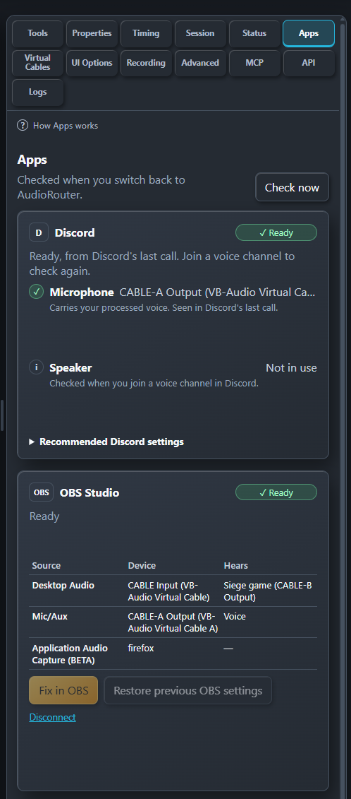

1
Route your microphone
In AudioRouter, connect your microphone through the tools you want (Denoise, EQ, Compressor) to a Physical Output set to a cable's Input, for example CABLE-A Input.
AudioRouter cleans up your microphone and sends it to a virtual cable. Discord and OBS then record that cable instead of your raw microphone. The Apps tab checks that each app really uses the devices your route expects, and tells you exactly what to change when it does not.

A virtual cable is a pair of Windows devices. Whatever plays into CABLE Input comes out of CABLE Output, where another app can record it. AudioRouter plays your processed voice into the Input; Discord and OBS record the Output.
In AudioRouter, connect your microphone through the tools you want (Denoise, EQ, Compressor) to a Physical Output set to a cable's Input, for example CABLE-A Input.
In Discord or OBS, choose the same cable's Output, for example CABLE-A Output, as the microphone.
Open Apps in AudioRouter's right sidebar. It shows whether each app uses the right device, and what to change if not.
AudioRouter asks Windows which devices Discord is using, and compares them with your route. The Discord card shows Ready, Check, Waiting (Discord is open but not in a voice channel) or Not running. Out of a call, Windows still reports the devices Discord used in its last call, so the card can show Ready from that call; it never warns about a device Discord is not using right now. A Discord chip next to "Audio running" shows the same state while your session uses a voice cable or captures Discord.
Each problem names the device to choose. Show me how gives the exact Discord menu, and Copy device name copies the name so you can find it in Discord's list.
OBS records audio from its own sources: Mic/Aux and Desktop Audio in Settings, plus any Audio Input or Application Audio capture in your scenes. AudioRouter reads those sources through OBS's own WebSocket server, which you turn on in OBS under Tools › WebSocket Server Settings, then Connect in the OBS card. For each source it shows the device and what that device hears through your route, and flags:
Fix in OBS shows each change before it is made, applies it only after you confirm, and keeps the previous settings so Restore previous OBS settings can put them back. While OBS is closed, the card shows its last saved setup.
For Discord, the Apps tab only reads what Windows reports about devices in use. It never changes Discord, your games or Windows settings, and it does not need a Discord login or plugin. It changes an OBS source only when you confirm Fix in OBS. It never sends anything off your PC.
When Windows has not reported something yet, for example before you join a call, AudioRouter says it is waiting instead of guessing.